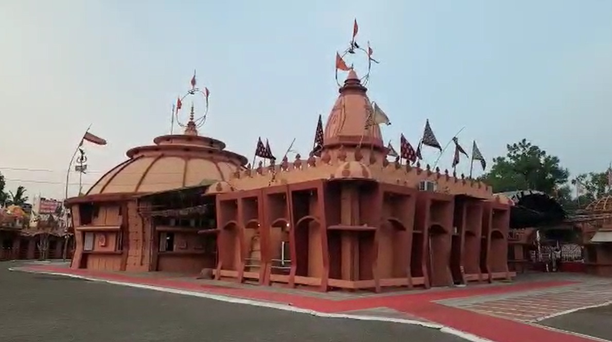

Khandwa district, formerly known as the East Nimar district, is a district of the Madhya Pradesh state in central India. The city of Khandwa is the administrative headquarters of the district. Other notable towns in the district include Mundi, Harsud, Punasa, Pandhana and Omkareshwar.
